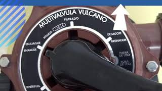

Consejos para el mantenimiento del equipo de filtrado de su piscina

- Limpie regularmente los cestos de skimmer y bomba: Asegúrese de limpiar los cestos de skimmer y bomba periódicamente. Estos cestos recogen los desechos y escombros antes de que lleguen al filtro. Retire los residuos acumulados en ellos para evitar obstrucciones y mantener un flujo adecuado de agua.
- Limpie o reemplace los cartuchos del filtro: Si su piscina utiliza un sistema de filtro de cartucho, verifique regularmente su estado. Limpie los cartuchos según las instrucciones del fabricante o reemplácelos cuando estén muy sucios o dañados.
- Lave y enjuague el filtro de arena: Si su piscina tiene un filtro de arena, es importante realizar un lavado y enjuague regularmente para eliminar la acumulación de suciedad y restablecer su eficiencia. Consulte el manual del fabricante para conocer el procedimiento específico para su filtro.
- Verifique y reemplace los sellos y juntas: Realice periódicamente una inspección de los sellos y juntas del equipo de filtrado, como los del cabezal del filtro y la bomba. Reemplace cualquier sello desgastado o dañado para evitar fugas y mantener un funcionamiento óptimo.
- Controle la presión del filtro: Preste atención a la presión en el manómetro del filtro. Un aumento significativo de la presión puede indicar que es necesario limpiar o enjuagar el filtro. Siga las recomendaciones del fabricante para los niveles de presión ideales.
- Realice un enjuague después de la limpieza: Después de limpiar o enjuagar el filtro, asegúrese de realizar un ciclo de enjuague para eliminar cualquier residuo suelto antes de volver a poner el sistema en funcionamiento normal.
- Mantenga un calendario de mantenimiento: Cree un calendario de mantenimiento para realizar tareas regulares, como la limpieza de los cestos, el lavado del filtro y la inspección de los sellos. Esto le ayudará a mantener el equipo en buen estado y prevenir problemas futuros.